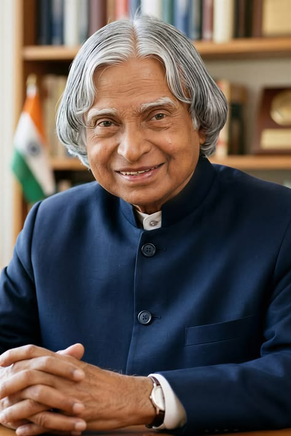

A Life Dedicated to India
Dr. A.P.J. Abdul Kalam was one of India's most respected scientists, educators and public figures. His journey from a humble background to becoming the 11th President of India inspired millions.
He played an important role in India's space and missile development programmes and became widely known as the "Missile Man of India".
Beyond science and technology, Kalam dedicated much of his life to motivating students and encouraging young people to dream, learn and contribute to the nation.
His simple lifestyle, powerful vision and connection with students made him a lasting symbol of inspiration.
Journey & Achievements
Born in Rameswaram, Tamil Nadu.
Joined India's space research programme and contributed to major scientific projects.
Played a key role in the successful launch of the SLV-III mission.
Contributed to India's Pokhran-II nuclear tests.
Became the 11th President of India.
Passed away while doing what he loved most — teaching and inspiring students.
“Dream, dream, dream. Dreams transform into thoughts and thoughts result in action.”
— Dr. A.P.J. Abdul Kalam